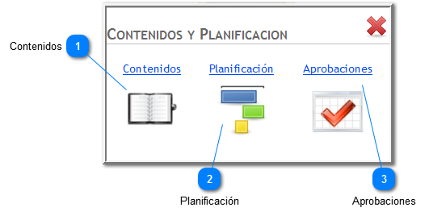
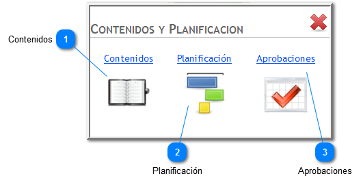

Contenidos

Desde aquí se puede acceder a las pantallas que permiten la gestión y planificación de contenidos curriculares, así como también la aprobación de una planificación por parte del Director de la institución.
Contenidos

Desde aquí se puede acceder a las pantallas que permiten la gestión y planificación de contenidos curriculares, así como también la aprobación de una planificación por parte del Director de la institución.
|